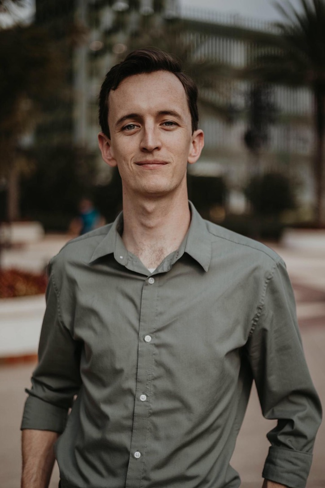

About Me

Hi, I am John Sickels, working and learning out of Central Florida. Welcome to my
Basic Portfolio. Serving as a canvas for my work, you can watch this site update over time. This is the About Me section where you can read about who I am, what I do, and a bit about my hopes and dreams. I may talk about some of my favorite foods as well, but this is just temporary filler space. Independent, yet collaborative, I like working with teams just as much as I appreciate time alone to focus. So, if there are any bugs or mishaps found in these pages, please feel free to contact me
here.
Orlando native of eight years, I have grown to love and appreciate what Central Florida has to offer. Food & Beverage is my bread and butter, as I have served clients in Winter Park, Maitland, I-Drive, Disney, Downtown, and currently Baldwin Park. I've washed dishes, key-held quick serve joints, managed lunch buffets, built beverage programs, even Generally Managed a 'polished casual' full service novelty restaurant. Experiences I wish to bring over into my new line of work inlcude time management, meeting deadlines, working with a team, customer service, and leadership. While I
do enjoy taking orders from guests while standing on my feet for eight to twelve hours at a time, my absence at dinner time and on weekends does not align with an ideal maturity into family parenthood. My little man is due March 2019. You can view some maternity shoot photographs on my
portfolio.
HTML and CSS have been second nature to me, due to some prior education, but I do look forward to learning about the rest of the full stack flex laid out in my
Coding Boot Camp. With this knowledge, I hope to land a position within three months of graduatiuon in August 2019. I can't be picky, for all there is to know, I could favor any position Web Development has to offer. From there, I hope to gain six to twelve months experience, with a never ending job hunt for that
dream job. My dream job allows me to be home for dinner. My dream job gets me
paid vacation. My dream job would not only grant finiancial comfort, but also lifetime fulfillment. I need to be happy with my work, for what is this all about? I hope you enjoyed the read, please stay tuned as more will be revealed.
-- John :-)
P.S. my favorite food is pizza.